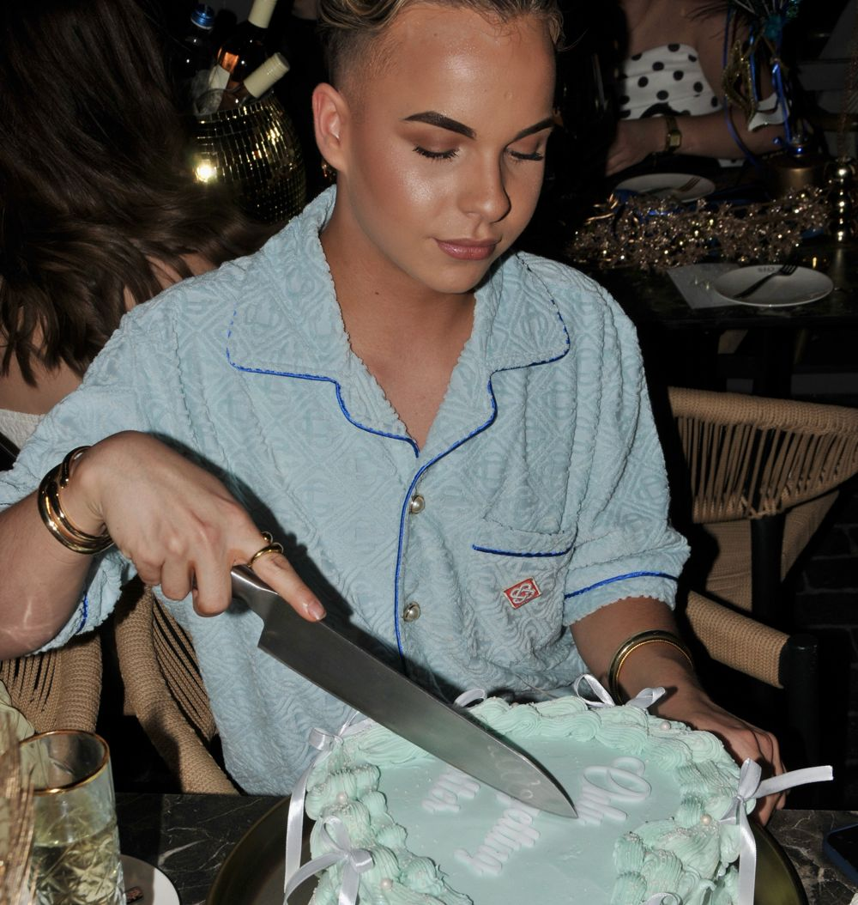
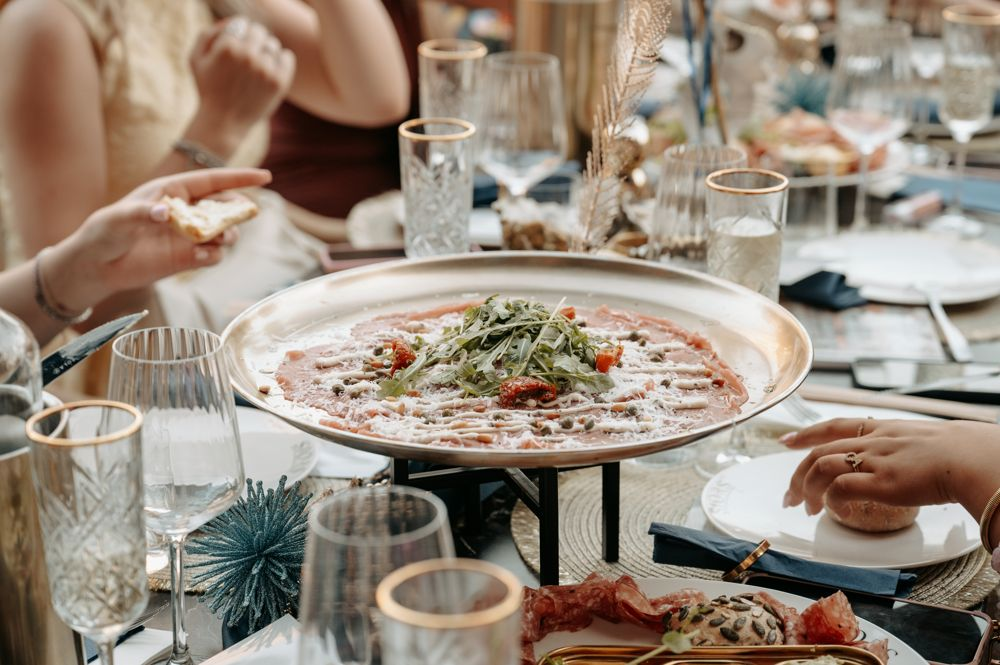
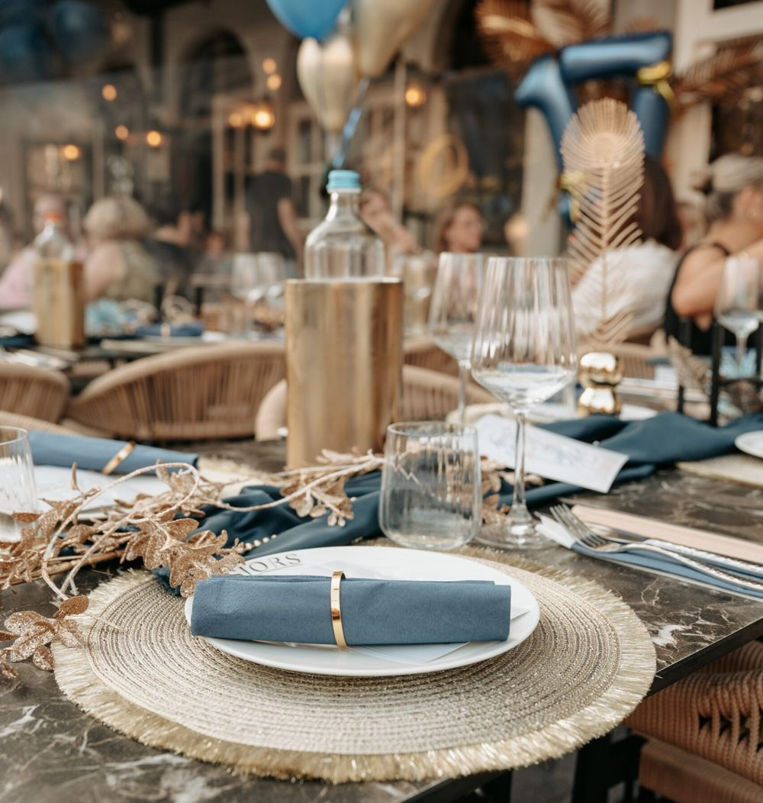
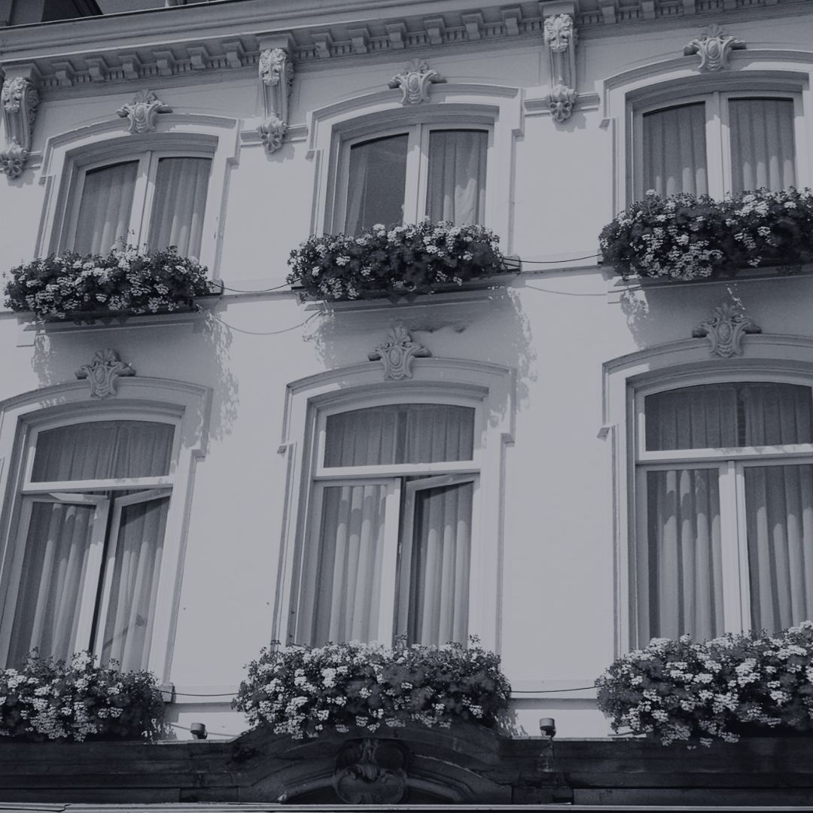
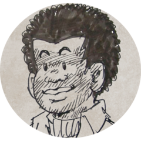

Midden op de Grote Markt in Bergen op Zoom, met het mooiste uitzicht van het plein. Voor koffie, lunch, diner of een borrel in de zon.
Wat een aanwinst voor de grote markt in bergen op zoom.hendrik de jonge · Restaurantreviews.nl
Wat op de kaart staat, vinden we zelf lekker. Van een twaalfuurtje tot côte à l'os, en drankjes en bites de hele dag.
Onze mosselen komen van Les Moules uit Bruinisse, het familiebedrijf van mosselkweker Arthur Landa, inmiddels de vierde generatie. Gekweekt op eigen percelen in de Oosterschelde, rechtstreeks van de mosselboer naar Sjors.
Met verse frites, frisse salade en diverse sauzen.
Een verjaardag, jubileum of gewoon samen met vrienden of familie. We denken met je mee over het arrangement dat bij jouw moment past.

Huisgemaakt gebak, verse koffie of thee en een fijne plek om samen te komen.

Borrelplanken, cocktails of een uitgebreid shared dining-menu met allerlei gerechtjes om te delen.

Voor-, hoofd- en nagerecht, afgestemd op jouw wensen. Voor een jubileum, familiediner of zakelijke gelegenheid.
Twee deuren verderop, in de kelder onder het monumentale Stadhuis aan de Grote Markt 1, hebben we onze eigen evenementenlocatie. Sinds 2025 is de ruimte van ons, en we hebben hem helemaal zelf aangekleed: authentiek, warm en stijlvol.
De ruimte stemmen we helemaal af op jouw wensen.


Brasserie Sjors runnen we met ons gezin en ons super toffe personeel. Andrea, Richard, oma en de kinderen werken allemaal mee. Samen zorgen we dat je je bij ons thuis voelt, of je nu even binnenloopt of de hele middag blijft hangen.
De naam komt van Richards favoriete strip van vroeger: Sjors en Sjimmie. Die vrolijke, eigenwijze sfeer vind je nog steeds terug. We doen alles op onze eigen manier, en serveren wat we zelf ook graag zouden krijgen.
Gisteren voor het eerst bij dit onlangs geopende restaurant gegeten. En kan alleen maar concluderen dat het een aanwinst is voor Bergen op Zoom. Eten was goed en kwam snel. En bediening was top. Gastvrij, beleefd en snel.Marc Stoger · Restaurantreviews.nl
De locatie is super, het personeel is erg vriendelijk en gezellig en het eten is van topkwaliteit. Ook de eigenaren zijn erg warm en toegankelijk.hendrik de jonge · Restaurantreviews.nl
Leuk teras, prachtige locatie aan de grote markt. Ook hebben ze heel erg toffe cocktails, met geweldige smaak.Daniel Verroen · Restaurantreviews.nl
Reserveer online een tafel, of bel ons even. Voor groepen, feesten en speciale wensen denken we graag met je mee.
Parkeren: in het centrum betaald op straat. Voor langer kun je terecht op het Sint-Catharinaplein of het Mineur Plein; parkeergarages liggen op ca. 5 minuten lopen.
| Maandag t/m donderdag | 10:00 – 23:00 |
| Vrijdag en zaterdag | 10:00 – 02:00 |
| Zondag | 10:00 – 23:00 |
Bediening, keuken of terras: bij ons ben je geen nummer, maar echt onderdeel van de club. Vakantiehulp, parttime of fulltime. Stuur een berichtje of loop gewoon even binnen.